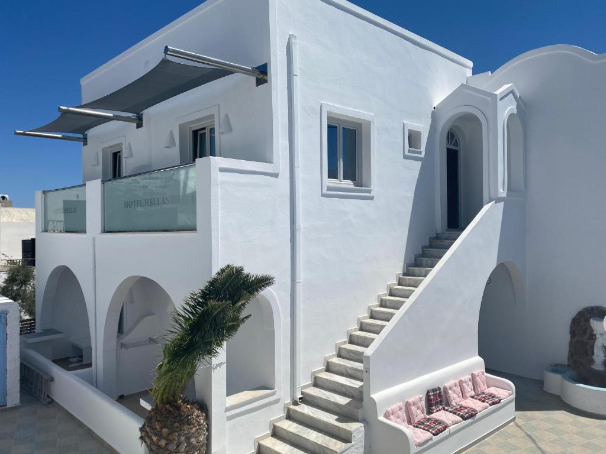

Hotel Hellas
Situat la doar câteva minute de mers pe jos de piața centrală din Fira, Hotelul Hellas are o piscină în aer liber cu o terasă la soare și oferă camere decorate simplu. WiFi este gratuit la recepție și în zona piscinei. Fiecare cameră are TV cu canale prin satelit, minifrigider, aer condiționat și baie privată cu duș. Unele camere oferă vedere la mare sau la piscină. La o scurtă plimbare de Hotelul Hellas se pot găsi restaurante și baruri. Portul Ormos Athinios se află la 5 km, iar Aeroportul Santorini este la 6,5 km. Parcarea privată este gratuită. Cuplurile apreciază în mod deosebit această locaţie. I-au dat scorul 8,6 pentru un sejur pentru 2 persoane.
